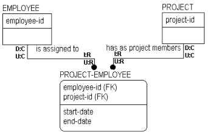

In the figure below, the relationship between PROJECT and PROJECT-EMPLOYEE is identifying. Therefore, the valid options for referential integrity for the parent entity in the relationship, PROJECT, include Cascade and Restrict:

Cascade indicates that all instances of PROJECT-EMPLOYEE that are affected by the deletion of an instance of PROJECT should also be deleted. Restrict indicates that a PROJECT cannot be deleted until all instances of PROJECT-EMPLOYEE that have inherited its key have been deleted. If there are any left, the Delete is restricted.
One reason to restrict the deletion might be that the business needs to know other facts about a PROJECT-EMPLOYEE such as the date started on the project. If you Cascade the Delete, you lose this supplementary information.
When you update an instance in the parent entity, the business has also determined that the updated information should cascade to the related instances in the child entity.
As you can see in the example, different rules apply when an instance is inserted, updated, or deleted in the child entity. When an instance is inserted, for example, the action is set to Restrict. This rule appears as I:R placed next to the child entity in the relationship. This means that an instance can be added to the child entity only if the referenced foreign key matches an existing instance in the parent entity. So, you can insert a new instance in PROJECT-EMPLOYEE only if the value in the key field matches a key value in the PROJECT entity.